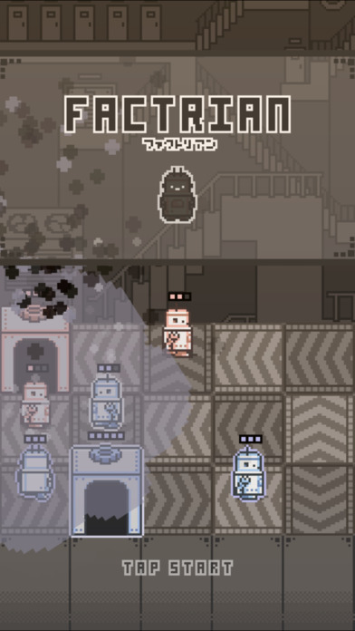

FACTORIAN
日本ゲーム大賞2016 アマチュア部門コンテスト「優秀賞」受賞作品！！

説明
4つのチームに分かれて戦う電子ボードゲーム。
自分のターンが回ってくるごとに体力が2ずつ溜まり、それを使って歩兵を生み出したり歩かせたりして攻めていく。
敵の基地を全て壊せば勝ちで、その時歩兵の有無は関係ない。
地面にはある一方に進むベルトコンベアーがあり、この向きに歩兵は勝手に進む。進んだ後の歩兵の向きも重要になるので、戦略性が高い。
とても楽しいゲームです^o^